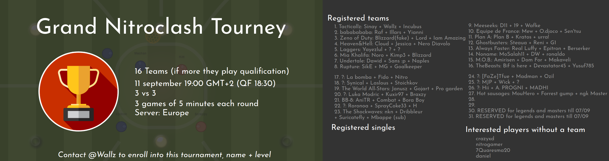

2018-09-11: The tournament is over and I want to thank participants but especially Wallz who handled all the boring organization stuff! Congratz to the winner, the Tacticalz team ;) Watch the the replay of the live stream on youtube here, and get all replay files here (187 MB)
2018-09-04: Spectate mode, in-game replays (skip with a click), levels now go up to 150, minor bug fixes 9 PLACES left in the TOURNAMENT! As a remainder, you MUST be present on DISCORD during the tournament to get the matchmaking links (and you need to CREATE a discord chat group with your teammates and Wallz)
2018-08-25: A tournament is planned on September the 11th, enroll on discord and click the image below for more details

2018-06-12: The "Create team" button has been improved to support matchmaking: you can now choose different teams and challenge yourselves!
Who wants to organize a tournament? contact me
2018-02-16: Mobile and Tablet compatibility.
2018-02-13: Quickchat: Triger with the key G then any 0-9 key, or double tap any 0-9 key. Fix chat, UI improvements.
2018-02-14: New game modes. Show player count in server selection.
2017-09-11: Better AI players. Leaderboards you can show by clicking the button at the top.
2017-09-06: Level progression, achievements and account creation to display your level, statistics and achievements. You can also show in-game stats with the TAB key. As this is a BIG update please report any issue with feedback or discord links at the bottom of the page.
2017-08-30: Experimental v2 is now default (more easy for beginners). Improved fonts for non-latin languages.
2017-08-24: Added experimental gamemode with more responsive controls (this mode may change). Added [AI] tag to bots. Human players are distributed more evenly to existing games when joining. Vietnamese translation
2017-08-19: Keyboard control now has auto-brake when you release the arrows keys. Fix for "teleport" issues (client/server desync). Gamepad/Joystick support (activate in settings)
2017-08-12: Create team to play with friends. Play with keyboard : arrow keys and W (boost). Graphics quality settings. Translation for pt-br.
2017-08-07: Added translations for fr, tr, ru, es. Many thanks to all contributors!
2017-07-31: Leaderboard based on points for players connected to the server (press L)
2017-07-28: More game actions (shot, save, clear, center...) will give you points ! New button on game summary: when everybody is ready, starts next game earlier.
2017-07-27: Improved game summary. Fix jerkiness when braking 2017-07-26: In-game chat, press T to enter text
2017-07-25: New camera mode with fixed zoom (press X then use mouse wheel) + added markers for players and ball out of screen